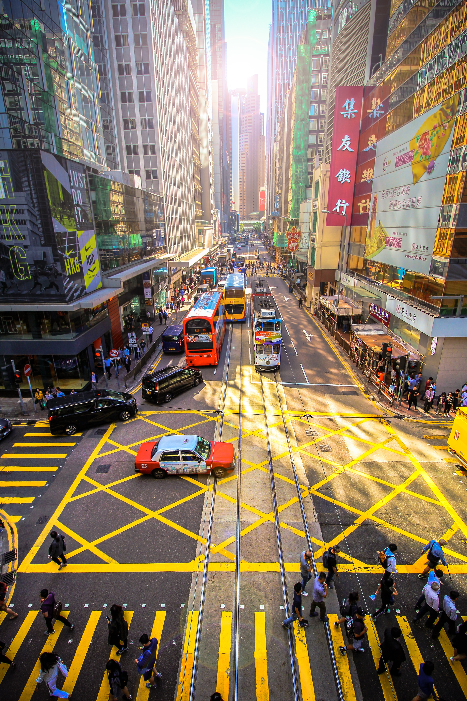

홍콩은 중화인민공화국 화난 주강 삼각주 동쪽에 위치한 특별행정구이다. 정식 명칭은 중화인민공화국 홍콩 특별행정구이다. 홍콩은 마카오, 광저우, 선전, 주하이, 그리고 광둥성의 다른 주요 도시들과 함께 세계에서 가장 인구가 많은 주강 삼각주 대도시권을 형성하고 있다. 홍콩은 1,104km2의 면적에 740만 이상의 다양한 국적 출신의 홍콩인들로 구성, 세계에서 4번째로 높은 인구밀도 지역이다.
